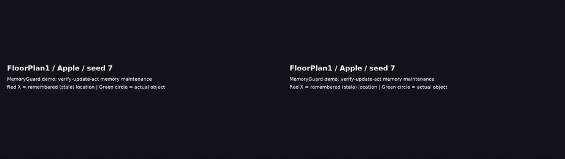
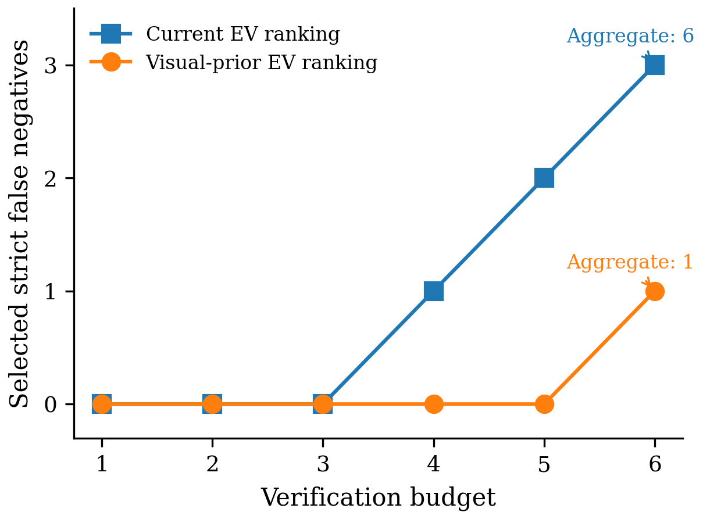
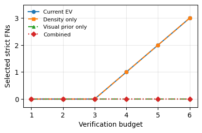

演示：被动失败 vs. 主动维护

左：被动智能体按陈旧记忆行动，到达记忆中的旧位置（红 X）却一无所获。右：MemoryGuard 先核验记忆、判定其陈旧、刷新位置，再导航到物体的真实新位置（绿圈）并完成抓取。视频由真实仿真帧渲染；右侧俯视图展示记忆旧位置、物体真实位置与智能体轨迹。
完整分辨率运行
同一案例（FloorPlan1 / Apple / seed 7）的被动 vs. 主动并排对比。另一段视频展示货架目标通过有界位姿回退被成功抓取：FloorPlan5 / Knife / seed 163。
问题
长程智能体会存储物体记忆以避免反复搜索；但环境变化（物体被移动）后这些记忆会变陈旧，按陈旧记忆行动就会失败，而持续核验所有记忆又会浪费有限的感知与导航资源。本项目研究的具体问题是：
在有限的感知与导航预算下，智能体应当主动核验并维护哪些记忆？
工作原理
1打分
用廉价的预观测信号（重访可见性、与记忆位姿的距离、按类别的视觉混淆指标）计算"期望核验价值"并选出预算内 top-B。打分刻意简单、可审计；任何学习型 P(stale) 估计器都可替换。
2核验
用逐步导航走到记忆位姿，对实时 RGB 帧运行开放词汇检测器（Grounding DINO + SAM 2），判定陈旧/新鲜并给出由检测结果支撑的候选位置。Oracle 元数据绝不作为策略输入。
3更新
判定陈旧后，记忆记录由检测证据就地刷新，同时记录旧位置、新位置、置信度与更新来源——每次变更都可追溯。
4行动
导航到刷新后的位置并以诚实交互执行下游动作：forceAction=False、修正偏航角的"面向-抓取"、相机俯仰扫描，以及邻近可达位姿的有界回退。
可审计性。每一行记录都包含：是否使用核验器、陈旧判定、记忆是否被修改、重访/任务测量路径、TeleportFull 标志与失败原因。
结果
| 案例集 | 可评估配对 | 主动成功 | 被动成功 | McNemar 精确 p |
|---|---|---|---|---|
| 预注册挑战 | 32 | 29/32（91%） | 0/34 | 3.7e-09 |
| Held-out pilot（未见场景/目标/种子） | 11 | 11/11 | 0/11 | 9.8e-04 |
| Held-out v2（6 个未见场景、8 个未见组合） | 24 | 22/24（92%） | 0/24 | 4.8e-07 |
主动分支 95% Clopper-Pearson 置信区间：预注册挑战 [0.75, 0.98]，held-out v2 [0.73, 0.99]。剩余主动失败为诚实的交互失败（目标被遮挡）与检测器假阴性，均如实报告而非剔除。
支撑性发现
- 预算化排序在易漏检协议上把被选中的严格检测假阴性从 6 → 1（预算 1–6）；组件消融表明收益来自视觉混淆先验（匹配反事实：current 6、density-only 6、visual-only 0、combined 0）。
- 检测不等于维护：32B 视觉语言模型单轮可 6/6 检出陈旧，但只有 3/6 给出正确更新；多轮智能体完整链路 0/6。
- 核验器误差刻画：全部分歧均为假阴性（8/8），集中在同类型实例混淆；定向复跑显示该现象对运行条件敏感而非确定性复现。


评测协议
结论采用配对设计检验，而不是聚合成功率。案例先预注册，再经过与结果无关的几何筛选（陈旧位置与真实物体距离 ≥ 2 m、刷新位置 ≤ 1.5 m、目标可抓取、同类型配对无歧义）。随后主动与被动分支在同一批冻结案例上运行：相同场景/种子/初始摆放、相同逐步导航与诚实交互；被动分支只按陈旧位置行动，不使用核验器、不修改记忆。我们报告精确计数、McNemar 精确检验与 Clopper-Pearson 置信区间，并在未见场景、目标类别与种子上做复现。
快速开始
git clone https://github.com/Jxy-yxJ/MemoryGuard.git
cd MemoryGuard
pip install -r requirements.txt # AI2-THOR、numpy、pillow、matplotlib、opencv
python -m unittest discover -s tests # 275 项测试（纯 CPU 可跑）
# 筛选案例宇宙 → 运行主动/被动双臂 → 配对统计
python -m embodied_memory_pilot.ai2thor_paired_hard_challenge_screen \
--scene-targets FloorPlan2:Egg FloorPlan5:Bread --seeds 101 103 107 --k 4 \
--freeze-mode round_robin --probe-mode rich --out-dir results/screen
python -m embodied_memory_pilot.ai2thor_live_gsam_closed_loop \
--scenes FloorPlan2 FloorPlan5 --seeds 101 103 107 \
--case-list results/screen/case_list_paired_hard_challenge_frozen_v1.json \
--verification-budget 4 --revisit-mode stepwise --execute-task-bridge \
--honest-interaction --max-alternate-poses 3 --rich-before-probe --out-dir results/active
python -m embodied_memory_pilot.ai2thor_paired_task_bridge_control \
results/active/live_gsam_closed_loop.json --live-passive --honest-interaction --out-dir results/paired
python scripts/analyze_paired_hard_challenge.py \
--active results/active/live_gsam_closed_loop.json \
--paired results/paired/paired_task_bridge_control.json \
--case-list results/screen/case_list_paired_hard_challenge_frozen_v1.json --out-dir results/analysis
# 为已记录的案例渲染带字幕演示视频
python scripts/make_demo_video.py --row-source results/active/live_gsam_closed_loop.json \
--case FloorPlan2:Potato:101 --mode active --out-dir videos引用
@misc{jiang2026memoryguard,
title = {MemoryGuard: Bounded Active Memory Maintenance for Long-Horizon Embodied Agents},
author = {Jiang, Xinyu},
year = {2026},
howpublished = {\url{https://github.com/Jxy-yxJ/MemoryGuard}},
note = {Open-source research software}
}适用范围与局限
- 全部结果均为固定、预注册案例集上的 AI2-THOR 机制性证据。几何筛选决定了评测条件；被动基线在筛选案例上预期失败，因此配对检验证明的是判别性，而非广泛有效性。
- Held-out 复现使用了已披露的、比原始协议更丰富的初始探测。
- 不对 ObjectNav/SPL、操作基准、持久化写回、跨平台迁移或真机性能作任何主张。